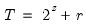

|
|
|
denote the series length and decompose
into its dyadic component and a remainder: ,
. The default maxscale
is then set with the following rules:
 then
then  , otherwise (2) if expanding the series,
, otherwise (2) if expanding the series,  and (3) if contracting the series
and (3) if contracting the series  .
. .
.